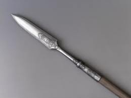

Рогатина

Рогатина — это самое тяжелое из русских копий, весом до 1 кг (против 200-400 г у обычного копья), обычно с 30-60 см наконечником в форме листа лаврового дерева, ширина которого могла достигать 7 см. Рогатина — истинно русское холодное оружие, и даже в польский язык это слово проникло из русского. Впервые рогатина упоминается в Лаврентьевской летописи 1149 года. Преимущественно рогатины использовались охотниками при охоте на крупного зверя. Охотничьи рогатины были короче боевого оружия, с толстым древком и более массивным наконечником, иногда даже снабжавшимся поперечной перекладиной, чтобы не проткнуть зверя.
С помощью боевых рогатин пехота прежде всего оборонялась от всадников, но иногда это оружие становилось оружием нападения и даже использовалось для броска на несколько метров. Большой вес рогатины позволял ей с легкостью пробить кольчугу врага, но при этом масса и толстое древко не позволяли эффективно использовать её в рукопашном бою.
Постепенно рогатина, как оружие защиты от кавалерии, бала заменена более эффективными в этих схватках пиками. Всадники же, наоборот, использовали рогатины достаточно успешно вплоть до XVIII века — длина лезвия кавалерийской рогатины составляла 30-40 см, ширина около 6 см, и такое массивное копье с не очень длинным древком являлось достаточно универсальным колюще-режущим оружием.
Главная страница.